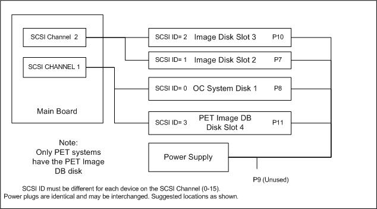

GEMS Proprietary Class: A
Direction 5117807-800, Rev# A
GEMS Proprietary Class: A |
| Required Persons | Preliminary Reqs | Procedure | Finalization |
|---|---|---|---|
| 1 |
| Last Revised: | 10 Feb, 2006 |
No tools or test equipment required.
No consumables required.
No replacement parts required.
| Potential for Equipment Damage. This optional procedure can be used if the failure that required replacement of the host computer, is not hard drive related. All drives must be in working condition and exchanged at once. Perform this procedure ONLY IF NECESSARY to retain customer image data. There are no FRUs within the HP xw8000 computer, and no other components should be removed. Disturbing any other components within the HP chassis could result in equipment damage, which will void any warranty. | |
To prevent damage to components within the HP xw8000 chassis, observe
the following ESD precautions:
| |
No required conditions.
With ALL cables removed from the old and new HP Host Computers, perform the following steps:
Unlock the cover on the side of the old HP Host Computer.
The cover keys are attached to the back panel of the system.
Pull out on the side cover latch to release the side cover.
Tilt the cover open, then lift it off. Refer to Illustration 1.
Illustration 1: Opening the Side Cover

Repeat the above procedure, to open the new HP Host Computer.
Place the HP Host Computer on its side with the system board facing up.
Remove the power and SCSI data cables from each drive. Refer to Illustration 2.
Illustration 2: Hard Drive Cables (Left: SCSI Data Cable; Right: Power Cable)

Place your fingers on the colored release clips on the sides of the drive, and squeeze inward. Pull gently just enough to release the drive rail latches. Refer to Illustration 3.
Illustration 3: Hard Drive Rails

| The drive rails are not screwed on to the drive. Do not hold the drive by the rails when it is not installed in a drive bay, because you could drop and damage the drive. | |
Grasp the hard drive with your hand and pull out.
Place the hard drive (with rails attached) on a static mat.
Repeat the above procedures on the new HP Host Computer, to extract its hard-drive.
| Hold onto the hard drive - NOT the rails - when handling the drive. | |
Insert the site's original drives into the exact same slots of the new HP Host Computer. PET systems will have a 4th drive. IT must be placed in Slot 4. Load the drives in the order shown in Illustration 4.
Drive 1 should be installed first, Drive 2 next, then Drive 3. For PET systems insert drive 4.
Illustration 4: SCSI Drive Loading Order

Drive slot 1 is the bottom slot and must house the 36GB OC System Hard Drive and be connected to SCSI Ch 1 and P8 power. Drive slots 2 and 3 house the 73GB Image Hard Drives and be connected to SCSI Ch 2 and P7 and P10 power. Drive slot 4 is only used on DST PET systems with multiple host computers. Attach to SCSI Ch 1 and use P11. Press down gently until each drive snaps into place.
Connect the drive cables:
Connect the proper power cable to each hard drive (see Illustration 5).
Illustration 5: SCSI Drive Power Cable Connections

Connect the proper SCSI Data cable to each hard drive.
Do NOT change the jumper settings on any of your site's original drives.
Place the drives removed from the replacement Computer into the OLD HP Host Computer. These new drives must all go back with the defective HP computer.
| NOTE: | The original HP Host Computer must have the new drives installed, when it is returned. |
Ensure that all internal cables are properly connected and safely routed in the new HP Host Computer.
Place the side cover onto the HP Host Computer chassis (aligning the guide rail on the bottom inside edge of the cover with the bottom edge of the HP Host Computer chassis). Refer to Illustration 6.
Illustration 6: Aligning and Closing the Cover

4. Verify no cables are pinched, and gently close the cover.
Lock the cover using the key provided.
Repeat the above procedure, to close and lock the original HP Host Computer, with the new drives installed.
No finalization required.